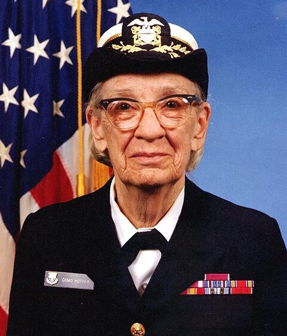

 Grace Hopper (1906–1992) was a pioneering American computer scientist, mathematician, and a Rear Admiral in the United States Navy. She is widely recognized for her significant contributions to the development of computer programming and software engineering, particularly in the creation of machine-independent programming languages. One of her most notable achievements was the development of FLOW-MATIC, a programming language designed for business applications, and COBOL (Common Business-Oriented Language), which remains one of the most widely used high-level programming languages today. Hopper's work with early computers began in 1944, when she joined the team working on the Harvard Mark I, one of the first large-scale automatic digital computers. She was instrumental in the creation of one of the first compilers, a program that translates human-readable commands into machine-readable code, which laid the foundation for later advancements in computer programming. Throughout her career, Hopper was a strong advocate for making programming languages more accessible to people who were not experts in computer science. Her efforts to create English-like commands for programming, instead of the complex binary codes that were traditionally used, helped democratize access to technology. Hopper’s belief in simplifying the way computers were programmed earned her recognition as a key figure in the history of computing. In addition to her technical achievements, Hopper served in the U.S. Navy, where she attained the rank of Rear Admiral. She was awarded numerous honors throughout her life, including the Presidential Medal of Freedom, which was presented posthumously. Her legacy continues to inspire generations of computer scientists, engineers, and military personnel.
Grace Brewster Murray was born in 1906 in New York City, the eldest of three children. From an early age, she exhibited a strong curiosity, even dismantling alarm clocks to understand how they worked. She attended Vassar College, where she earned a degree in mathematics and physics, before going on to Yale University. There, she earned both a master's degree and a Ph.D. in mathematics, which laid the foundation for her pioneering work in computer science.
In 1944, Hopper began her professional career as part of the Harvard Mark I team, working on one of the earliest large-scale computers. She later joined the Eckert–Mauchly Computer Corporation and played a key role in the development of UNIVAC I, one of the first commercial computers. Hopper's major achievement during this time was creating the first compiler, which allowed programming languages to be written in English-like instructions, revolutionizing how people interacted with computers. In 1959, she was a driving force behind the creation of COBOL, a programming language designed for business applications, which is still in use today. Hopper also served in the U.S. Navy, where she made crucial contributions to military computing efforts during World War II and retired with the rank of rear admiral.
After retiring from the Navy, Hopper continued to work in the tech industry and remain an influential advocate for women in computing. She received numerous honors, including the Presidential Medal of Freedom, awarded posthumously. Even after her death in 1992, Hopper's legacy continued to inspire future generations in the fields of technology and computer science. Her name remains synonymous with groundbreaking advancements in computing, and several institutions and awards bear her name, ensuring her lasting impact on the industry.
In her 1982 NSA lecture "Future Possibilities: Data and Humans," Grace Hopper predicted the rise of smaller, more powerful computers, interconnected networks, and user-friendly programming. She emphasized that computers should serve humans, advocated for automation and AI in decision-making, and warned against resisting change with the phrase, "We’ve always done it this way." Her insights were remarkably accurate, shaping the future of computing and intelligence operations.
Long thought lost to time due to how it was recorded, this lecture was recently recovered and released to the world. You can watch it's two parts below.
The Grace Hopper Celebration (GHC) is the world's largest conference for women and nonbinary individuals in technology, organized by AnitaB.org. Established in 1994 by Dr. Anita Borg and Dr. Telle Whitney to honor computing pioneer Grace Hopper, the event highlights the research and achievements of women in computing.
For more details, visit GHC 2025